Encyclopedia of Polyhedrons
A three-dimensional shape with flat polygonal faces, straight edges, and sharp corners or vertices is called a polyhedron. The plural of a polyhedron is called polyhedra or polyhedrons.
-
Platonic solids
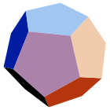The five Platonic solids, also known as the five regular solids, were discovered in ancient times. Although each one was probably known prior to 500 BC, they are collectively named after the ancient Greek philosopher Plato (428-348 BC) who mentions them in his dialogue Timaeus, written circa 360 BC. Each Platonic solid uses the same regular polygon for each face, with the same number of faces meeting at each vertex. The five Platonic solids are the only convex polyhedra that meet these criteria.
-
Kepler-Poinsot solids
The Kepler-Poinsot solids are the four self-intersecting regular polyhedra. Two of them (the Small Stellated Dodecahedron and the Great Stellated Dodecahedron) were discovered by Johannes Kepler (1571-1630). The other two (the Great Dodecahedron and Great Icosahedron) were discovered by Louis Poinsot (1777-1859) and are the duals of the two Kepler solids. Like the Platonic solids, these solids are regular because each uses the same regular polygon or star polygon for each face, with the same number of faces meeting at each vertex.
-
Archimedean solids
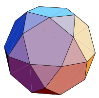The Archimedean solids are a set of 13 polyhedra described by Pappus of Alexandria around 340 AD, who attributed them to the ancient Greek mathematician Archimedes (287-212 BC). Archimedes' own writings on the subject have been lost. Examining these 13 solids, it can be seen that each is a convex polyhedron whose faces are regular polygons of two or more types that meet in the same pattern around each vertex. It can also be seen that each has polyhedral group (tetrahedral, octahedral, or icosahedral) rotational symmetry. These 13 solids are the only polyhedra possessing both of these traits.
-
Catalan solids
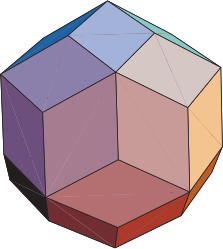The Catalan solids are the duals of the Archimedean solids. They are named after the Belgian mathematician Eugene Catalan (1814-1894) who first described the complete set in 1865. The Rhombic Dodecahedron and Rhombic Triacontahedron were described in 1611 by Johannes Kepler. Each Catalan solid has one type of face and a constant dihedral angle, and it possesses the same symmetry as its Archimedean dual.
-
Versi-Regular Polyhedra
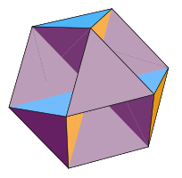A versi-regular polyhedron is a quasi-regular polyhedron distinguished by having faces that pass through its center. There are nine versi-regular polyhedra, all of which are self-intersecting. Eight of the nine have non-orientable surfaces (like that of a Klein Bottle or the Real Projective Plane). The only one with an orientable surface is the Octahemioctahedron. The Tetrahemihexahedron has an Euler characteristic of 1, making it topologically equivalent to the Real Projective Plane. The remaining eight have even numbered Euler characteristics. All nine were described in 1881 by Albert Badoureau.
-
Self-Intersecting Quasi-Regular Polyhedra
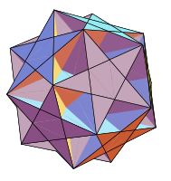A polyhedron is quasi-regular if it is vertex-transitive and edge-transitive but not face-transitive. In this context, transitivity means that for any two vertices (edges, faces) of the polyhedron, there exists a translation, rotation, and/or reflection that leaves the outward appearance of the polyhedron unchanged yet moves one vertex (edge, face) to the other. This definition implies that a quasi-regular polyhedron must have two kinds of regular faces, where each face of one type is surrounded on all sides by faces of the other type. There are only two quasi-regular polyhedra that are not self-intersecting, namely the Cuboctahedron and the Icosidodecahedron. When self-intersection is allowed, there are 14 other quasi-regular polyhedra. Nine have faces that pass through their centers and are often subcategorized as versi-regular polyhedra. The remaining five are listed on this page.
-
Self-Intersecting Quasi-Regular Duals
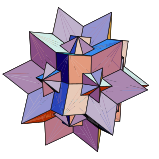The dual of a quasi-regular polyhedron is face-transitive and edge-transitive but not vertex-transitive. In this context, transitivity means that for any two faces (edges, vertices) of the polyhedron, there exists a translation, rotation, and/or reflection that leaves the outward appearance of the polyhedron unchanged yet moves one face (edge, vertex) to the other. This definition implies that a quasi-regular dual must have two kinds of regular vertices, where each vertex of one type is connected along all of its edges to vertices of the other type. There are only two quasi-regular duals that are not self-intersecting, namely the Rhombic Dodecahedron and the Rhombic Triacontahedron. When self-intersection is allowed, there are 14 other quasi-regular duals, but only five of these are finite. The nine versi-regular polyhedra, due to their faces that pass through their centers, produce duals with vertices at infinity.
-
Self-Intersecting Quasi-Quasi-Regular Polyhedra
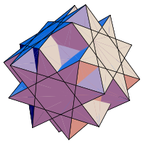A polyhedron is quasi-quasi-regular if it is vertex-transitive with trapezoidal vertex figures. Vertex transitivity means that for any two vertices of the polyhedron, there exists a translation, rotation, and/or reflection that leaves the outward appearance of the polyhedron unchanged yet moves one vertex to the other. A vertex figure is the polygon produced by connecting the midpoints of the edges meeting at the vertex in the same order that the edges appear around the vertex. There are only two quasi-quasi-regular polyhedra that are not self-intersecting, namely the Rhombicuboctahedron and the Rhombicosidodecahedron. When self-intersection is allowed, there are 12 other quasi-quasi-regular polyhedra.
-
Self-Intersecting Quasi-Quasi-Regular Duals
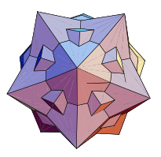The dual of a quasi-quasi-regular polyhedron is face-transitive with faces shaped like kites or darts. Face transitivity means that for any two faces of the polyhedron, there exists a translation, rotation, and/or reflection that leaves the outward appearance of the polyhedron unchanged yet moves one face to the other. There are only two quasi-quasi-regular duals that are not self-intersecting, namely the Deltoidal Icositetrahedron and the Deltoidal Hexecontahedron. When self-intersection is allowed, there are 12 other quasi-quasi-regular duals.
-
Versi-Quasi-Regular Polyhedra
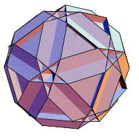A polyhedron is versi-quasi-regular if it is vertex-transitive with crossed trapezoidal vertex figures. Vertex transitivity means that for any two vertices of the polyhedron, there exists a translation, rotation, and/or reflection that leaves the outward appearance of the polyhedron unchanged yet moves one vertex to the other. A vertex figure is the polygon produced by connecting the midpoints of the edges meeting at the vertex in the same order that the edges appear around the vertex. There are seven versi-quasi-regular polyhedra, all of which are self-intersecting. All seven have non-orientable surfaces (like that of a Klein Bottle or the Real Projective Plane).
-
Versi-Quasi-Regular Duals
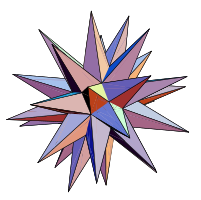The dual of a versi-quasi-regular polyhedron is face-transitive with faces shaped like bowties. Face transitivity means that for any two faces of the polyhedron, there exists a translation, rotation, and/or reflection that leaves the outward appearance of the polyhedron unchanged yet moves one face to the other. There are seven versi-quasi-regular duals, all of which are self-intersecting. All seven have non-orientable surfaces (like that of a Klein Bottle or the Real Projective Plane).
-
Self-Intersecting Truncated Regular Polyhedra
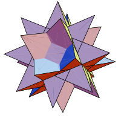A polyhedron is truncated regular if it is vertex-transitive with isosceles triangular vertex figures. Vertex transitivity means that for any two vertices of the polyhedron, there exists a translation, rotation, and/or reflection that leaves the outward appearance of the polyhedron unchanged yet moves one vertex to the other. A vertex figure is the polygon produced by connecting the midpoints of the edges meeting at the vertex in the same order that the edges appear around the vertex. There are five truncated regular polyhedra that are not self-intersecting, namely the Truncated Tetrahedron, the Truncated Octahedron, the Truncated Cube, the Truncated Icosahedron, and the Truncated Dodecahedron. When self-intersection is allowed, there are five other truncated regular polyhedra.
-
Self-Intersecting Truncated Regular Duals
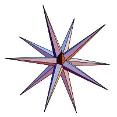The dual of a truncated regular polyhedron is face-transitive with faces shaped like isosceles triangles. Face transitivity means that for any two faces of the polyhedron, there exists a translation, rotation, and/or reflection that leaves the outward appearance of the polyhedron unchanged yet moves one face to the other. There are five truncated regular duals that are not self-intersecting, namely the Triakis Tetrahedron, the Tetrakis Hexahedron, the Triakis Octahedron, the Pentakis Dodecahedron, and the Triakis Icosahedron. When self-intersection is allowed, there are five other truncated regular duals.
-
Self-Intersecting Truncated Quasi-Regular Polyhedra
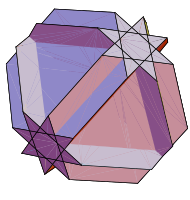A polyhedron is truncated quasi-regular if it is vertex-transitive with scalene triangular vertex figures. Vertex transitivity means that for any two vertices of the polyhedron, there exists a translation, rotation, and/or reflection that leaves the outward appearance of the polyhedron unchanged yet moves one vertex to the other. A vertex figure is the polygon produced by connecting the midpoints of the edges meeting at the vertex in the same order that the edges appear around the vertex. There are only two truncated quasi-regular polyhedra that are not self-intersecting, namely the Truncated Cuboctahedron and the Truncated Icosidodecahedron. When self-intersection is allowed, there are five other truncated quasi-regular polyhedra.
-
Self-Intersecting Truncated Quasi-Regular Duals
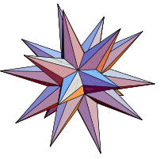The dual of a truncated quasi-regular polyhedron is face-transitive with faces shaped like scalene triangles. Face transitivity means that for any two faces of the polyhedron, there exists a translation, rotation, and/or reflection that leaves the outward appearance of the polyhedron unchanged yet moves one face to the other. There are only two truncated quasi-regular duals that are convex and not self-intersecting, namely the Disdyakis Dodecahedron and the Disdyakis Triacontahedron. When non-convexity and self-intersection are allowed, there are five other truncated quasi-regular duals. Only one, the Great Disdyakis Dodecahedron, is not self-intersecting.
-
Self-Intersecting Snub Quasi-Regular Polyhedra
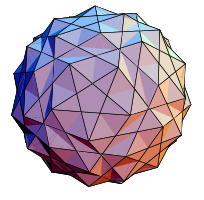A polyhedron is snub quasi-regular if it is vertex-transitive with irregular pentagonal, hexagonal, or octagonal vertex figures. Vertex transitivity means that for any two vertices of the polyhedron, there exists a translation, rotation, and/or reflection that leaves the outward appearance of the polyhedron unchanged yet moves one vertex to the other. A vertex figure is the polygon produced by connecting the midpoints of the edges meeting at the vertex in the same order that the edges appear around the vertex. There are only two snub quasi-regular polyhedra that are not self-intersecting, namely the Snub Cube and the Snub Dodecahedron. When self-intersection is allowed, there are 10 other snub quasi-regular polyhedra.
-
Self-Intersecting Snub Quasi-Regular Duals
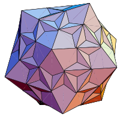The dual of a snub quasi-regular polyhedron is face-transitive with faces shaped like irregular pentagons, hexagons, or octagons. Face transitivity means that for any two faces of the polyhedron, there exists a translation, rotation, and/or reflection that leaves the outward appearance of the polyhedron unchanged yet moves one face to the other. There are only two snub quasi-regular duals that are not self-intersecting, namely the Pentagonal Icositetrahedron and the Pentagonal Hexecontahedron. When self-intersection is allowed, there are 10 other snub quasi-regular duals, but only nine of these are finite. The Great Dirhombicosidodecahedron, due to its faces that pass through its center, produces a dual with vertices at infinity.
-
Prisms & Antiprisms
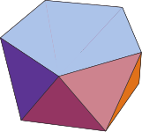A regular prism consists of two regular N-sided polygons joined together by N squares. A regular antiprism consists of two regular N-sided polygons joined together by 2N equilateral triangles. The Square Prism and the Triangular Antiprism are the Cube and the Octahedron, respectively. The remaining regular prisms and antiprisms are closely related to Archimedean solids in the sense that they are convex polyhedra whose faces are regular polygons of two or more types that meet in the same pattern around each vertex. The distinguishing factor is that regular prisms and antiprisms do not have polyhedral group (tetrahedral, octahedral, or icosahedral) rotational symmetries.
-
Dipyramids & Trapezohedra
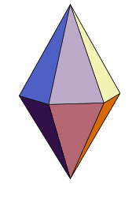The duals of the regular prisms are often called dipyramids, and the duals of the regular antiprisms are often called trapezohedra. The Square Dipyramid and the Trigonal Trapezohedron are the Octahedron and the Cube, respectively. The remaining regular dipyramids and trapezohedra are closely related to Catalan solids in the sense that they have one type of face and they have constant dihedral angles. The distinguishing factor is that regular dipyramids and trapezohedra do not have polyhedral group (tetrahedral, octahedral, or icosahedral) rotational symmetries.
-
Star Prisms & Antiprisms

A regular star prism consists of two regular N-sided star polygons joined together by N squares. A regular star antiprism consists of two regular N-sided star polygons joined together by 2N equilateral triangles. They are considered uniform polyhedra because they have regular polygons as faces and are vertex-transitive. Vertex transitivity means that for any two vertices of the polyhedron, there exists a translation, rotation, and/or reflection that leaves the outward appearance of the polyhedron unchanged yet moves one vertex to the other. Like regular prisms and antiprisms, they can be distinguished from other uniform polyhedra by the fact that they do not have polyhedral group (tetrahedral, octahedral, or icosahedral) rotational symmetries.
-
Star Dipyramids & Trapezohedra
The duals of the regular star prisms are called star dipyramids, and the duals of the regular star antiprisms are called star trapezohedra. Each has one type of face and a constant dihedral angle. Like dipyramids and trapezohedra, they can be distinguished from other uniform polyhedra duals by the fact that they do not have polyhedral group (tetrahedral, octahedral, or icosahedral) rotational symmetries.
-
Archimedean-Catalan Hulls
Each polyhedron on this page is the convex hull of an Archimedean solid compounded with its Catalan dual. This operation is equivalent to John Conway's "join" operation applied to either the Archimedean solid or the Catalan dual.
-
Propellor Solids
The solids appearing on this page were created by applying George Hart's propellor operation to the Platonic solids and some of the Archimedean and Catalan solids.
-
Johnson Solids
The Platonic solids, Archimedean solids, and the regular prisms and antiprisms are vertex-transitive convex polyhedra with regular polygon faces. Vertex transitivity means that for any two vertices of the polyhedron, there exists a translation, rotation, and/or reflection that leaves the outward appearance of the polyhedron unchanged yet moves one vertex to the other. What happens if the vertex transitivity criterion is removed? As it turns out, there are 92 non-vertex-transitive convex polyhedra with regular polygon faces. In 1966, Norman Johnson published a paper titled "Convex Polyhedra with Regular Faces" where he described in detail all 92 of these polyhedra. He introduced names for those that weren't named previously, and he mentions that there appear to be no more than 92 of them. These 92 polyhedra are currently known as the Johnson solids. In 1967, Viktor Zalgaller proved that there are no more than 92.
Mathematics, rightly viewed, possesses not only truth, but supreme beauty – a beauty cold and austere, like that of sculpture, without appeal to any part of our weaker nature, without the gorgeous trappings of painting or music, yet sublimely pure, and capable of a stern perfection such as only the greatest art can show.
Bertrand Russel